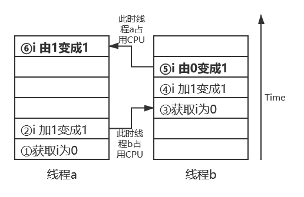

多线程
- 为什么需要多线程？
-
硬件需要：
CPU与其他设备的速度不同步，CPU很快，等执行完之后就进行等待，而且现在CPU大多是多核的，速度更快了。希望可以让CPU使用更加充分。
-
程序需要：
java的执行模型是同步/阻塞的：默认是单线程，在执行的过程中，执行完第一行再执行第二行，一步一步来。假如第一行是执行一个很慢的方法，那么就会等这个方法执行结束再继续，这样就需要等待很久。
-
多线程的过程
默认执行main线程，假如新开了线程a并start，那么就增加了一个执行流，main线程和线程a都有其私有的方法栈。
-
start & run 的区别
-
start相当于main线程（老板）给新线程（工人）分配完了之后就让工人自己去干活了，自己继续去做自己的事情。
-
run相当于main线程（老板）给新线程（工人）分配了活并进行监工，等工人干完活之后再去做自己的事情。
如果让新线程执行run方法的话，和没有分多线程是一样的效果！！！只有start才可以并发执行！
-
-
多线程会产生什么问题？
同一份代码，不同人乱序运行，如果不是原子操作（某一时刻只能被一个线程操作），那么就会时好时坏，有时就会出错
例子：i 初始值为0，线程a和线程b都执行同一方法中的i++操作
理想正确场景：
线程a执行时 i 加1，变成1；线程b执行时 i 再加1，变成2（即使顺序调换，先线程b再线程a，结果也还是2）
实际报错场景：
i++分为三步：
(1) 取出 i 的值
(2) i 的值加 1
(3) 将叠加之后的值给 i
假设线程a先占用了CPU，取出 i 的初始值0，然后 i 加1变成了1。但是！此时线程a占用CPU的时间到了，所以轮到了线程b，由于线程a还没将数据赋值给 i ，所以 i 的值还是0，线程2成功在其基础上加1并赋值给 i ，那么 i 就变成了1。接下来又轮到了线程a，线程a直接将刚刚叠加之后的结果1赋值给 i 。最终结果就变成了 1 而不是2。 如下图所示。

-
什么时候使用多线程？
一般分两种应用：
-
CPU密集型应用 对于这种应用，多线程的效果略打折扣，因为CPU本来就处于繁忙状态，多线程的目的是充分使用CPU，提高CPU利用率。
-
IO密集型应用
包括网络IO（通常包括数据库）和文件IO
网络IO，例如平时访问数据库，本质就是通过DATABASE URL，从本地去访问数据库，整个过程也要经过网络IO，所以可以多线程处理其他的事情。
文件IO，例如下载文件，由于网络传输很慢，所以CPU可以先发送HTTP请求，然后多线程去做其他的事情，得到收到响应之后再继续。
-